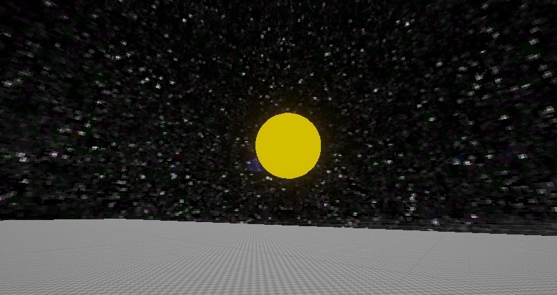
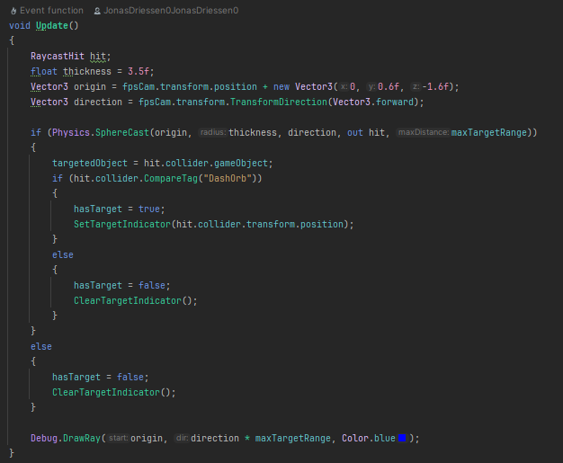

Introduction to the project
I made this project since i wanted to experiment more with the mechanics of our ultrakill project but i thought it was best to make a seperate project that uses my own movement and shooting scripts from the ultrakill project. This project is currently still in its early prototyping stage but ive got a lot in store for the future of this project.
Dash orbs
This is one of the new additions i added to this game, the dash orb.
When looking at the dashorb it targets it with a target indicator

The way it is able to target something is it first does a spherecast and if an object with the correct tag is in that spherecast then it activates the target indicator
But they are called dash orbs for a reason...

When the player presses "E" the player dashes towards the orb and these can be chained together to go pretty fast
You can download this project on github!